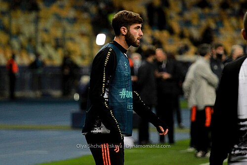

A.C. Reggiana 1919 Portfolio
Current roster, squad value, top assets, U23 assets, honours, and market risk.
Squad Market Score80.4
Squad ARES Score80.4
Average Age25.1
Transfer RiskLow
ARES fallback visualNo safe non-logo Commons image was activated for this club.
A.C. Reggiana 1919
Serie B | Italy | Europe
Top AssetAlessandro Musiari
U23 Assets9
Honours Rows8
ConfidenceHigh
Roster source: A.C. Reggiana 1919 | Checked 2026-05-24
Market Score vs Age
Squad portfolio shape by age and market score.
X-axis: Player ageY-axis: Market Score
ARESMarketTrendConfidence
How to read: Each point shows how squad age relates to market value.
Position Strength
GK, CB, FB, CM, W, CF portfolio balance.
X-axis: Position groupY-axis: Squad strength
ARESMarketTrendConfidence
How to read: Bars compare strength across the main football position groups.
Current Player Roster
| Player | Age | Position | Minutes / Role | ARES | Market | Tier | Trend | Confidence |
|---|---|---|---|---|---|---|---|---|
| AMDFA.C. Reggiana 1919Alessandro Musiari | 22 | DF | 3016 estimated minutes / current squad | 79.8 | 90.9 | Rising Asset | Rising | Medium |
| RMMFA.C. Reggiana 1919Roque Maisterra | 30 | MF | 2586 estimated minutes / current squad | 88.5 | 90.0 | Core Starter | Rising | Medium |
| EODFA.C. Reggiana 1919Elijah Obeng | 27 | DF | 2484 estimated minutes / current squad | 71.5 | 89.2 | Core Starter | Stable | Medium |
| FCGKA.C. Reggiana 1919Filippo Costi | 27 | GK | 920 estimated minutes / current squad | 73.6 | 88.9 | Core Starter | Stable | Medium |
| NCGKA.C. Reggiana 1919Niccolò Cacciamani | 21 | GK | 1188 estimated minutes / current squad | 88.8 | 88.8 | Rising Asset | Stable | Medium |
| JPCDFA.C. Reggiana 1919Jean Paulo Cardona | 19 | DF | 2837 estimated minutes / current squad | 69.1 | 86.8 | Rising Asset | Rising | Medium |
| LMDFA.C. Reggiana 1919Lucas Marcon | 23 | DF | 2789 estimated minutes / current squad | 82.1 | 86.1 | Rising Asset | Stable | Medium |
| AGDFA.C. Reggiana 1919Alberto Gilli | 26 | DF | 1928 estimated minutes / current squad | 77.8 | 85.2 | Core Starter | Stable | Medium |
| LADFA.C. Reggiana 1919Lorenzo Alizoni | 19 | DF | 2048 estimated minutes / current squad | 78.1 | 83.6 | Rising Asset | Stable | Medium |
| NTMFA.C. Reggiana 1919Nicolò Turchi | 28 | MF | 882 estimated minutes / current squad | 85.0 | 81.3 | Core Starter | Stable | Medium |
| AEDFA.C. Reggiana 1919Ashton Ezinwa | 27 | DF | 2266 estimated minutes / current squad | 87.9 | 80.8 | Core Starter | Rising | Medium |
 Manolo Portanova | 25 | MF | 2383 estimated minutes / Projected starter | 82.1 | 79.7 | Rising Asset | Rising | Medium |
| FCDFA.C. Reggiana 1919Filippo Carpi | 22 | DF | 2298 estimated minutes / current squad | 86.7 | 78.6 | Rising Asset | Stable | Medium |
| AADFA.C. Reggiana 1919Alessandro Agnesini | 31 | DF | 1676 estimated minutes / current squad | 81.9 | 77.4 | Core Starter | Rising | Medium |
| GMDFA.C. Reggiana 1919Giacomo Montanari | 30 | DF | 1192 estimated minutes / current squad | 87.5 | 76.2 | Core Starter | Stable | Medium |
| SLMFA.C. Reggiana 1919Samuel Ledain | 19 | MF | 2043 estimated minutes / current squad | 75.4 | 76.0 | Rising Asset | Rising | Medium |
| GFGKA.C. Reggiana 1919Gabriel Fajt | 26 | GK | 2870 estimated minutes / current squad | 76.6 | 72.3 | Core Starter | Rising | Medium |
| LMMFA.C. Reggiana 1919Leonardo Miceli | 28 | MF | 2364 estimated minutes / current squad | 78.9 | 71.5 | Core Starter | Stable | Medium |
| MEGKA.C. Reggiana 1919Matteo Enza | 33 | GK | 1875 estimated minutes / current squad | 83.8 | 71.4 | Core Starter | Rising | Medium |
| NFDFA.C. Reggiana 1919Nicolò Ferretti | 21 | DF | 1110 estimated minutes / current squad | 66.7 | 68.0 | Rising Asset | Rising | Medium |
| ASDFA.C. Reggiana 1919Alessandro Silipo | 23 | DF | 749 estimated minutes / current squad | 87.4 | 66.4 | Rising Asset | Rising | Medium |
U23 Assets
| Player | Age | Position | Market | Reason |
|---|---|---|---|---|
| AMDFA.C. Reggiana 1919Alessandro Musiari | 22 | DF | 90.9 | Current club roster row parsed from Wikipedia. |
| NCGKA.C. Reggiana 1919Niccolò Cacciamani | 21 | GK | 88.8 | Current club roster row parsed from Wikipedia. |
| JPCDFA.C. Reggiana 1919Jean Paulo Cardona | 19 | DF | 86.8 | Current club roster row parsed from Wikipedia. |
| LMDFA.C. Reggiana 1919Lucas Marcon | 23 | DF | 86.1 | Current club roster row parsed from Wikipedia. |
| LADFA.C. Reggiana 1919Lorenzo Alizoni | 19 | DF | 83.6 | Current club roster row parsed from Wikipedia. |
| FCDFA.C. Reggiana 1919Filippo Carpi | 22 | DF | 78.6 | Current club roster row parsed from Wikipedia. |
| SLMFA.C. Reggiana 1919Samuel Ledain | 19 | MF | 76.0 | Current club roster row parsed from Wikipedia. |
| NFDFA.C. Reggiana 1919Nicolò Ferretti | 21 | DF | 68.0 | Current club roster row parsed from Wikipedia. |
| ASDFA.C. Reggiana 1919Alessandro Silipo | 23 | DF | 66.4 | Current club roster row parsed from Wikipedia. |
Club Honours And Trophies
| Competition | Type | Count | Years | Source |
|---|---|---|---|---|
| Serie B Winners (1) | Team honour | 1 | 1992 | https://en.wikipedia.org/wiki/AC_Reggiana_1919 |
| Winners (1) | Team honour | 1 | 1992 | https://en.wikipedia.org/wiki/AC_Reggiana_1919 |
| Serie C Winners (7) | Team honour | 7 | 1939, 1957, 1963, 1970, 1980, 1988, 2022 | https://en.wikipedia.org/wiki/AC_Reggiana_1919 |
| Winners (7) | Team honour | 7 | 1939, 1957, 1963, 1970, 1980, 1988, 2022 | https://en.wikipedia.org/wiki/AC_Reggiana_1919 |
| Serie C2 Winners (1) | Team honour | 1 | 2007 | https://en.wikipedia.org/wiki/AC_Reggiana_1919 |
| Winners (1) | Team honour | 1 | 2007 | https://en.wikipedia.org/wiki/AC_Reggiana_1919 |
| Supercoppa di Serie C2 Winners (1) | Team honour | 1 | 2008 | https://en.wikipedia.org/wiki/AC_Reggiana_1919 |
| Winners (1) | Team honour | 1 | 2008 | https://en.wikipedia.org/wiki/AC_Reggiana_1919 |
Transfer Needs
| Need | Position | Reason | Priority | Suggested Profile |
|---|---|---|---|---|
| Role security and U23 depth | Depth risk review | Squad portfolio balance uses ARES score, market score, age curve, and roster coverage. | Medium | Current roster players sorted by Market Score |